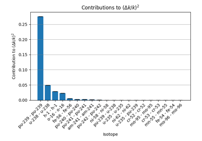
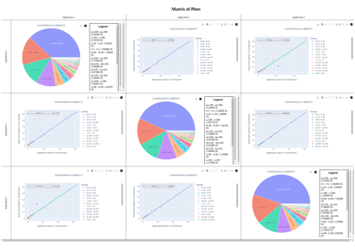
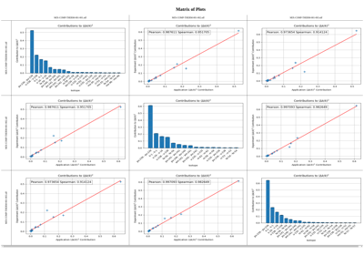

Examples
This directory contains examples of how to use the tsunami_ip_utils package.
General Examples
Below is a gallery of general examples


Comparing Calculated and TSUNAMI-IP E for a Set of SDF Files
Comparing Calculated and TSUNAMI-IP E for a Set of SDF Files

Visualizing Contributions

Correlation Plots
These examples demonstrate how to create correlation plots using the methods described in the technical manual.


Matrix Plots
These examples demonstrate the use of the tsunami_ip_utils.viz.viz.matrix_plot() function to generate a matrix of plots.
This is useful for comparing multiple applications and experiments in a single figure.

Matrices With a Different Set of Applications and Experiments
Matrices With a Different Set of Applications and Experiments



Matrix of Contribution Correlation Plots
Matrix of Contribution Correlation Plots

Changing Plot Defaults